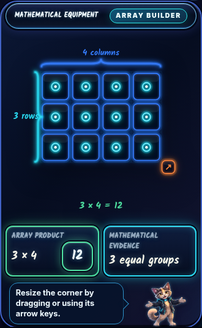
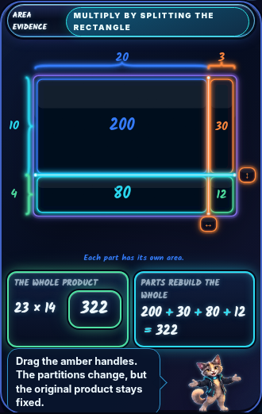
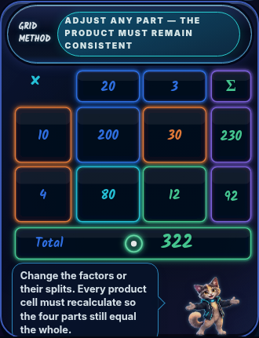
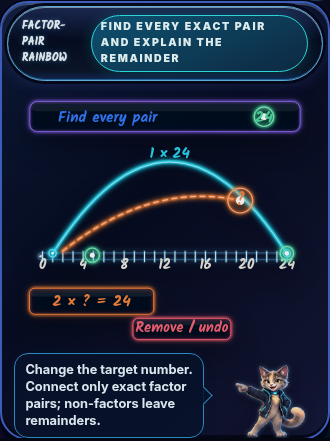

F3-01Array builderEqual rows, grouping and factor evidence; core F0 helper dock restored.Open interactive component →
F3-02Area modelArea partitions, fractions and algebraic relationships with F0 mascot and motion.Open interactive component →
F3-03Partitioned gridPlace-value partial products and interactive grid method with canonical helper.Open interactive component →
F3-04Factor-pair rainbowF0/F1 number line, exact arches and working factor proof. Corrected label spacing.Open interactive component →